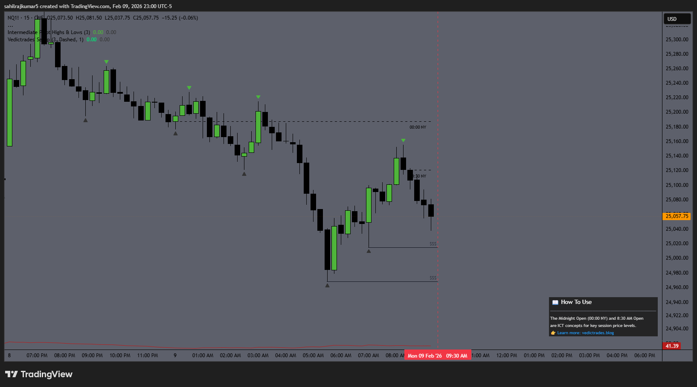
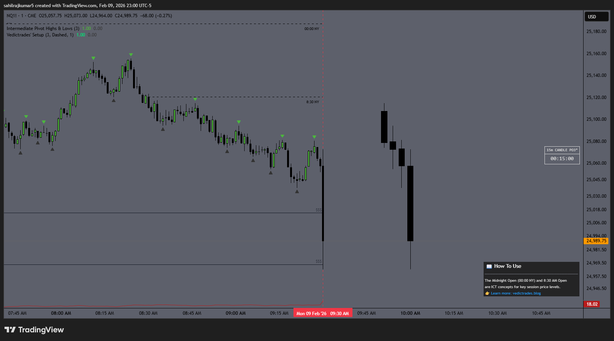
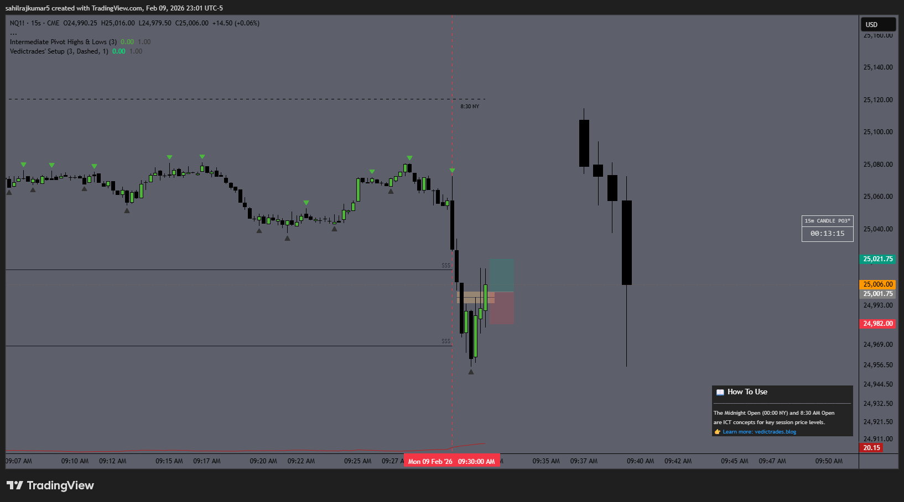
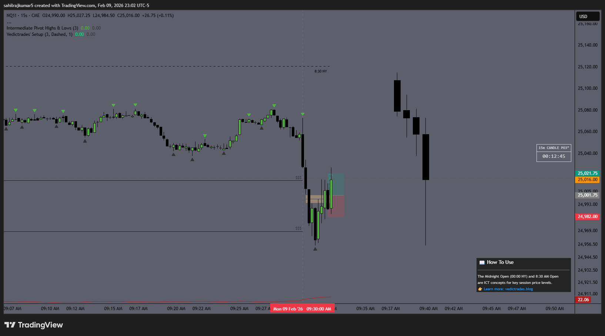
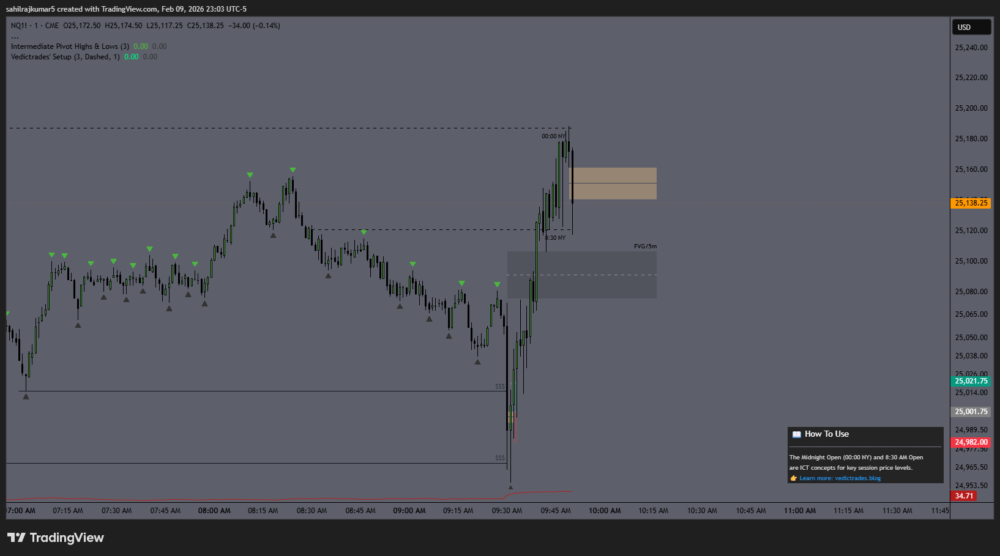
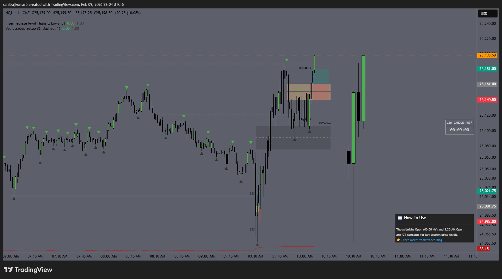

🕛
ICT Midnight Open & 8:30 AM Open
The scalper's playbook for determining short-term bias using two of ICT's most powerful session levels.
Lucid Trading · Tradeify · Vedic Trades
Strategy
ICT Scalping
Instrument
NQ Futures
Win Rate
~70%
TP / SL
20pt / 20pt
Session
NY Open 9:30 AM
The Midnight Open (00:00 NY) and the 8:30 AM Open are two of the most powerful reference levels in ICT. At the 9:30 AM equity open, price's position relative to these two levels tells you the short-term bias before anyone else has figured it out.
These aren't just one-and-done levels — they function as dynamic support and resistance throughout the entire session, giving you opportunities for the initial scalp, continuations, and even reversals.
🔥
Need a funded account to trade this? Check out
Lucid Trading (use code
VEDIC for up to 40% off) or
Tradeify — both are ideal for scalpers.
The Core Idea
The logic is simple: at 9:30 AM, check where price is relative to the Midnight Open and 8:30 AM Open. These two levels define your bias. If the opening candle then sweeps a 15-minute liquidity level and reverses, you've got your first trade of the day.
↑ Long Setup
Price is below both the Midnight Open and 8:30 AM Open at 9:30. The opening candle sweeps a 15m liquidity low, reverses up, and offers an entry — IFVG, OB, or plain FVG. Scalp long for 20 points.
↓ Short Setup
Price is above both the Midnight Open and 8:30 AM Open at 9:30. The opening candle sweeps a 15m liquidity high, reverses down, and offers an entry — IFVG, OB, or plain FVG. Scalp short for 20 points.
💡
SL flexibility: You can use either a flat 20-point stop, or place your stop at the swing low (for longs) / swing high (for shorts). Both approaches work — use whichever suits your risk tolerance.
Step-by-Step Execution
This is a precise, multi-timeframe drill-down. You start on the 15-minute, narrow into the 1-minute, then snipe your entry on the 15-second. Here's the full walkthrough with a live example from February 9, 2026 on NQ.
Step 1 — Mark the levels on the 15m chart
Your indicator plots the Midnight Open and 8:30 AM Open automatically. Your job is to identify and mark the 15m liquidity — the intermediate-term highs (ITH) and lows (ITL) formed before 9:30 AM. In this example, we marked the 15m ITLs below the session open.

15m NQ — Midnight Open (00:00 NY) and 8:30 AM Open marked. Price is below both at 9:30 AM = long bias. 15m ITLs marked as sweep targets.
Step 2 — Drop to the 1m chart at 9:30 AM
Watch the opening candle. You need to see it sweep the 15m liquidity you marked. This is the trap — retail gets stopped out, and smart money loads in the opposite direction. You do not need to wait for the 1m candle to close once the sweep happens.

1m NQ — The 9:30 opening candle sweeps the 15m ITL. Price is below both key levels, confirming long bias.
Step 3 — Drop to the 15s chart immediately
As soon as the sweep happens, drop to the 15-second chart. Identify the closest bearish FVG (since we want longs). This is the gap that needs to inverse for your entry signal. You're looking for price to push back up through this gap and hold it as support.

15s NQ — Bearish FVG identified after the sweep. Waiting for price to inverse through it (IFVG) for long entry.
Step 4 — Wait for the IFVG, then enter
Mark the 15s FVG and wait for price to inverse through it. The moment the bearish FVG holds as support (IFVG), that's your entry. Set your TP at +20 points and SL at -20 points. In roughly 70% of cases, the TP is hit.

15s NQ — The bearish FVG inverses into support. Entry triggered with 20pt TP / 20pt SL. Price rallies to target.
🧠
Why inversions work: A bearish FVG that gets swept and holds as support (IFVG) signals that sell-side liquidity has been consumed and buyers are now in control. It's one of the highest-probability entries in ICT. The same logic applies in reverse for shorts using bullish FVGs.
Playing the Continuation
Once your first scalp is booked, the Midnight Open and 8:30 AM levels keep working. They act as dynamic support and resistance for the rest of the session — giving you continuation trades as price pulls back into them.
1 Wait for price to tap the level
After the initial move, watch for price to retrace back to either the 8:30 AM Open or the Midnight Open. These levels act as a magnet and then springboard for continuation.
2 Identify a 5m FVG at the level
When price taps one of these levels, look for a 5-minute Fair Value Gap forming. This is your higher-timeframe confirmation that institutional interest is holding the level.
3 Mark 1m opposing FVGs
While waiting, mark any 1-minute FVGs forming in the opposite direction of your trade — these are your inversion entry candidates.
4 Enter on the 1m IFVG
Once price taps into the 5m FVG, wait for a 1m FVG to inverse. Enter with the same parameters: 20pt TP and 20pt SL.

1m NQ — Price rallies and taps the 8:30 AM / Midnight Open levels. A 5m FVG forms as the pullback zone. 1m bearish FVGs marked for inversion entries.

1m NQ — Price taps the 5m FVG, the 1m IFVG triggers, and the continuation long is entered with 20pt TP / 20pt SL.
♻️
Repeatable all session: This continuation pattern can repeat multiple times. Every time price pulls back to one of the key levels and a 5m FVG forms, you have another entry opportunity with the same framework.
Finding the Reversal
If you suspect the move is exhausted and want to catch a reversal rather than a continuation, the framework shifts to a higher timeframe:
🔻 Shorting a bullish move
Look for a 1-hour bearish FVG. When price trades into this zone, it signals that higher-timeframe sell-side order flow is present. This is your reversal zone to hunt shorts.
🔺 Longing a bearish move
Look for a 1-hour bullish FVG. When price drops into this zone, it signals higher-timeframe buy-side interest. This is your reversal zone to hunt longs.
⚠️
Reversals are lower probability than continuations. Only take these when there's clear higher-timeframe displacement into the 1hr FVG. If you're unsure, stick to the continuation framework — that's where the consistent edge is.
Quick Reference
- Plot Midnight Open (00:00 NY) and 8:30 AM Open on your chart
- Mark 15m ITH / ITL before 9:30 AM
- At 9:30, check: is price above or below both levels?
- Below both → long bias. Above both → short bias.
- Watch 1m for opening candle to sweep 15m liquidity
- Drop to 15s, identify opposing FVG
- Wait for IFVG → enter with 20pt TP / 20pt SL
- First scalp booked — now wait for price to pull back
- Watch for price to tap 8:30 AM Open or Midnight Open
- Identify a 5m FVG forming at the level
- Mark 1m opposing FVGs as they form
- Once 5m FVG is tapped, wait for 1m IFVG
- Enter with same 20pt TP / 20pt SL
- Suspect move exhaustion on the higher timeframe
- For shorts: identify a 1hr bearish FVG above price
- For longs: identify a 1hr bullish FVG below price
- Wait for price to trade into the 1hr FVG zone
- Use lower-timeframe confirmation for entry
- Lower probability — only take with clear displacement
Ready to put this into practice? Get funded with
Lucid Trading (use code
VEDIC for up to 40% off) or start an evaluation at
Tradeify — both are built for scalpers who need room to trade.
Lucid Trading — No DLL, 90% split, no monthly fees
Get Funded →